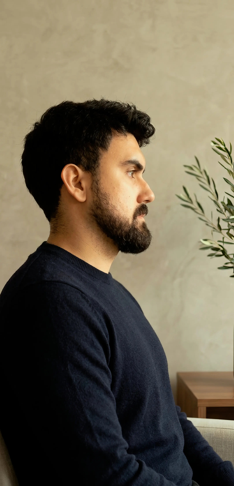

Acerca de mí
¡Hola, soy Edgar Fernández!
Soy artista visual figurativo y diseñador gráfico, originario de San Cristóbal, Venezuela. No he recibido grandes premios ni reconocimientos, pero eso nunca ha detenido mi impulso por crear.
El arte figurativo es mi forma de entender el mundo. Mi filosofía se basa en observar, sentir y conectar. En cada obra busco tender un puente entre mi mirada y la tuya, invitándote a una pausa, a una reflexión íntima. Me interesa colaborar contigo para dar vida a tus ideas, ya sea a través de un retrato, una composición personal o un proyecto que necesite sensibilidad visual.
Mi experiencia abarca la pintura al óleo y acrílico, el dibujo a carboncillo y pastel, la ilustración digital y la enseñanza de técnicas figurativas.
Mi trabajo personal es un reflejo honesto de mis emociones y de mi entorno. Allí me permito experimentar sin ataduras, explorando la luz, la textura y la figura humana con total libertad.
OTROS INTERESES
Pasear, caminar por la ciudad o por alguna montaña
Escuchar música Rock no pesado
Tomar café y pasarla bien con una buena conversación